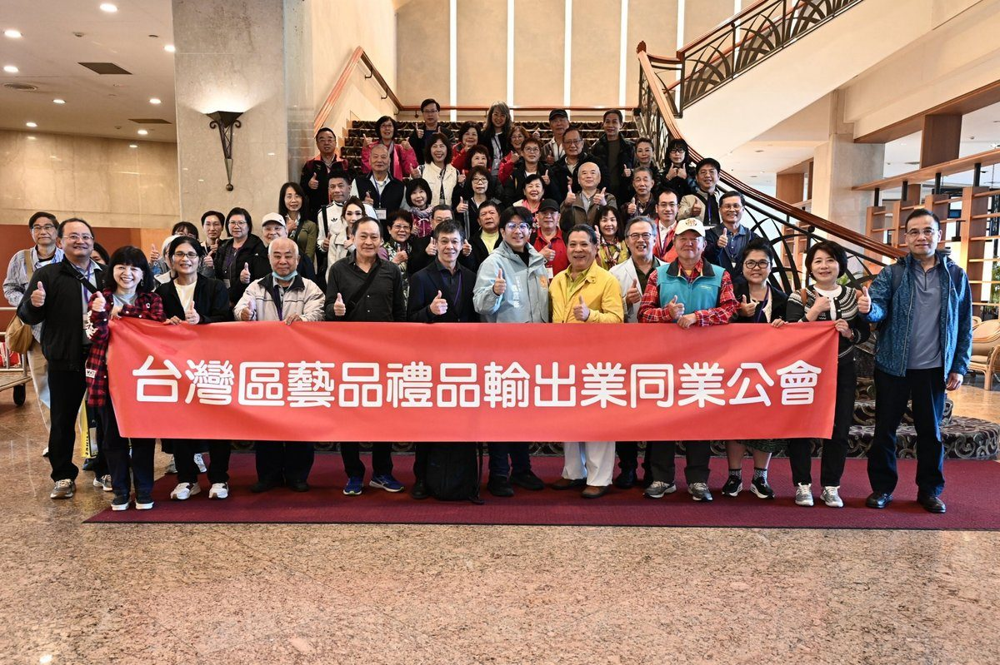

臺灣區藝品禮品公會百人挺花蓮 魏嘉彥熱情送行邀再訪

可樂電子報小編/編輯
臺灣區藝品禮品輸出業同業公會一行逾百人，19日由理事長林孟盛率團來到花蓮，展開兩天一夜的會員旅遊，走訪多處特色景點，以實際行動支持花蓮觀光。花蓮市長魏嘉彥今（20）日上午特地前往美侖大飯店，向即將結束旅程的訪團表達歡迎與感謝，並熱情邀請大家常來花蓮走走，欣賞山海美景、品嚐在地美食，為地方觀光經濟增添活力。

此次會員旅遊行程安排走訪花蓮將軍府1936、好客藝術村及四八高地等景點，從充滿歷史韻味的日式建築、融合客家文化與藝術創作的特色園區，到擁有遼闊太平洋視野的四八高地，讓來自各地的會員感受花蓮豐富的人文風情與自然景觀。尤其花蓮依山傍海，蔚藍海岸與雄偉山巒相互輝映，沿途景色令人心曠神怡，也為這趟旅程留下美好回憶。

林孟盛表示，花蓮擁有其他縣市難以取代的山海景觀，不論是壯麗的太平洋海岸，或是兼具歷史與文化特色的觀光景點，都值得一再造訪。他說，公會經常組團來花蓮旅遊，許多會員對花蓮並不陌生，每次來訪仍能感受到不同的風貌。此次除了安排會員旅遊，也有多名理監事特地來花蓮打高爾夫球，在欣賞美景之餘享受運動樂趣，對花蓮的休閒旅遊環境留下深刻印象。

魏嘉彥對公會長期支持花蓮觀光表達感謝。他表示，花蓮近年受到地震及風災影響，觀光產業面臨不少挑戰，地方旅宿、餐飲及商圈業者都殷切期盼遊客迴流。此次臺灣區藝品禮品輸出業同業公會號召逾百名會員來花蓮旅遊，不僅帶來實際的住宿、餐飲及觀光消費，也讓地方業者感受到工商企業界的溫暖支持。

魏嘉彥說，花蓮的美，不只是山海景色，更在於豐富的文化底蘊與濃厚的人情味。市區有許多值得細細品味的特色景點，還有東大門夜市、傳統市場及各具風味的美食小店，無論來過多少次，都能發現不同的驚喜。他也向訪團推薦花蓮的特色伴手禮，邀請大家把花蓮的好滋味帶回家，與親朋好友分享。
魏嘉彥強調，觀光是花蓮重要的經濟命脈，每一位願意來花蓮住宿、用餐及消費的旅客，都是對地方產業最直接的支持。他特別感謝林孟盛理事長率領會員來訪，也歡迎公會未來持續安排旅遊活動，讓更多企業界朋友認識花蓮、喜歡花蓮。
🌟 掌握花蓮在地第一手資訊・歡迎訂閱追蹤
深度紀實報導、在地精采影音專題，第一時間接收最新消息！